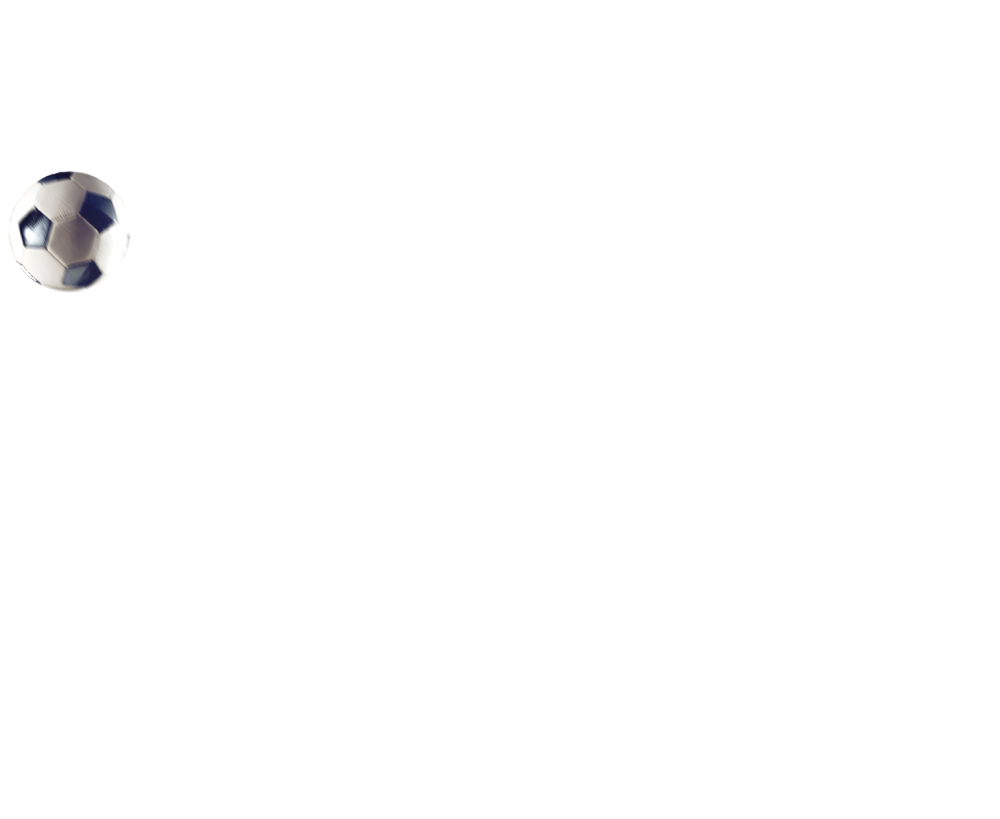
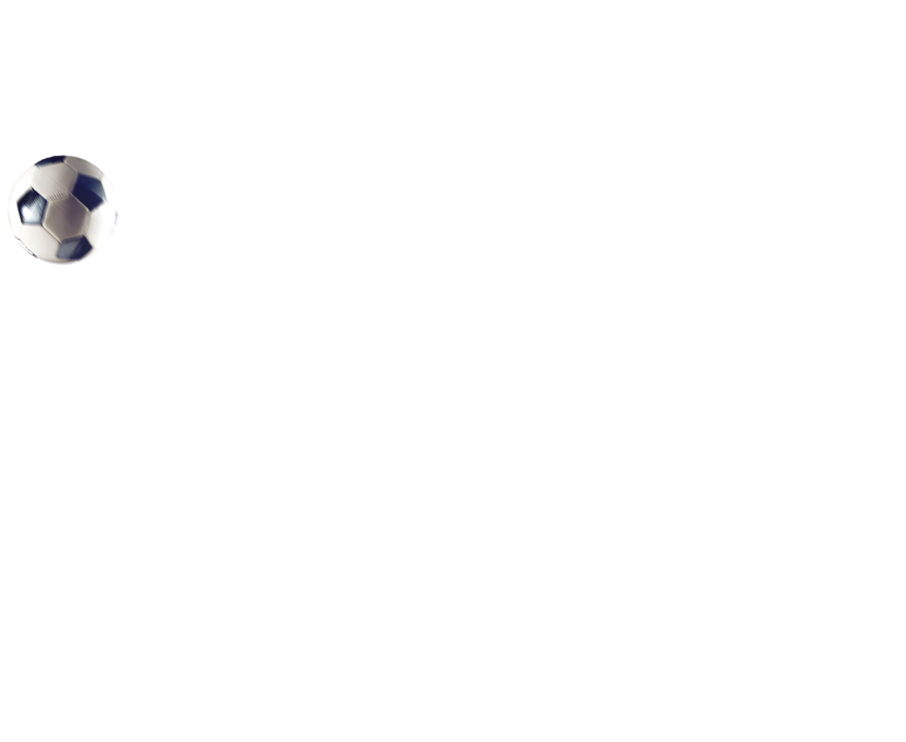

Neymar Jr
Neymar da Silva Santos Júnior known as Neymar, is a Brazilian professional
footballer who plays as a forward for Ligue 1 club Paris Saint-Germain
and the Brazil national team who is widely regarded as one of the best players in the
world and came into prominence at Santos,where he made his professional debut aged 17.He
was twice named the
South American Footballer of the Year and joined
Barcelona in 2012.

Lionel Messi
Lionel Andrés Messi also known as Leo Messi is an
Argentine
professional footballer who plays as a forward or an attacking midfielder and captains the
Argentina national team and played all his professional career
for La Liga club FC Barcelona. Often considered the best
player in the world and widely regarded as the greatest player of all time,Messi has won a
record six Ballon d'Or awards.

Cristiano Ronaldo
Cristiano Ronaldo dos Santos Aveiro is a Portuguese professional footballer
who plays as a forward for Serie A club Juventus and captains the Portugal national team. Often
considered the best player in the world and widely regarded as one of the greatest players of
all time, Ronaldo won five Ballons d'Or and four European Golden Shoes, which are records
for a European player.

Paulo Dybala
Paulo Exequiel Dybala is an Argentine professional
footballer who plays as a forward for Serie A club Juventus and the Argentina national team.
Commonly referred to as "La Joya" ("The Jewel"),or "U Picciriddu" ("The Kid"),Dybala began
his
club career in 2011 with Instituto de Córdoba; he joined
Palermo in 2012, at age 18 where he established
himself as one of the world's best young players.

Mesut Ozil
Mesut Özil (German pronunciation: [ˈmeːzut ˈøːzil], Turkish: [meˈsut
œˈzil];
born 15 October 1988) is a German professional footballer who plays as an attacking
midfielder
for Süper Lig club Fenerbahçe. Nicknamed "The Assist King", Özil is known for
his technical skills, creativity, agility, and finesse.He has also played as a wide
midfielder in his career.

Mauro Icardi
Mauro Emanuel Icardi (born
19 February 1993) is an Argentine professional footballer who plays as a striker for
Ligue 1
club Paris Saint-Germain and the Argentina national team.
Icardi began his footballing career at La Masia, the youth system of La Liga club
Barcelona,
before moving to Serie A club Sampdoria to begin his professional career in 2012

Di Maria
Ángel Fabián Di Marí is an Argentine professional
footballer who plays for Ligue 1 club Paris Saint-Germain and the Argentina
national team. He
can play as either a winger or attacking midfielder.
Di María began his career with Rosario Central, signed for the club Benfica in
2007, aged 19.He
helped Benfica win a Primeira Liga championship,and two Taça da Liga titles. In
2010, Di María
moved to Spanish club
Real Madrid where he won a La Liga title and the UEFA Champions
League.

Kylian Mbappé
Kylian Mbappé Lottin (born 20 December 1998) is a French
professional
footballer who plays as a forward for Ligue 1 club Paris Saint-Germain and
the France national
team.
Mbappé began his senior career with Ligue 1 club Monaco, making his
professional debut in 2015,
aged 16. With them, he won a Ligue 1 title, Ligue 1 Young Player of the
Year, and the Golden Boy
award.

Mohamed Salah
Mohamed Salah Hamed Mahrous Ghaly (born 15 June
1992) is an Egyptian
professional footballer who plays as a forward for Premier League club
Liverpool and captains
the Egypt national team. Considered one of the best players in the
world,he is known for
his finishing, dribbling, and speed.
Salah started his senior career with Egyptian club Al Mokawloon,
departing shortly thereafter to
join Swiss side Basel for an undisclosed fee.

Harry Kane
Harry Edward Kane MBE is an English professional
footballer who plays as a
striker for Premier League club Tottenham Hotspur and captains the
England national team. Regarded as one of the best strikers in the
world, Kane is known for his
prolific goalscoring record and ability to link play.
Kane began his career at Tottenham
Hotspur.

Kevin De Bruyne
Kevin De Bruyne is a Belgian professional
footballer who
plays as a midfielder for Premier League club Manchester City,
where he is vice-captain, and the
Belgium national team. He is one of just three players to have
won the PFA Players' Player of
the Year award back to back, and the only
midfielder and Belgium player to have done so in English
football history

Philippe Coutinho
Philippe Coutinho Correia is a Brazilian
professional
footballer who plays as an attacking midfielder or winger
for Spanish club Barcelona and the
Brazil national team. He is known for his combination of
vision, passing, dribbling and ability
to conjure curving long-range strikes.
Coutinho showed prodigious talent and excelled in Vasco da
Gama's youth system.
 
